Genomes, Sequencing, & The Myth of "Simple" Biology
From particulate inheritance and cytogenetic linkage to the 3.055-billion-base reality of the complete human genome.
When Oncology Therapies Pivot to Autoimmunity: The CAR-T Safety Pause
Novartis and Bristol-Myers Squibb pause 8 clinical trials of anti-CD19 cellular therapies following fatal immune toxicities.
The Media Narrative: "Fish Oil Halts Prostate Cancer"
How dietary supplement hype and health news framed a randomized trial as a breakthrough for men on active surveillance.
"High Omega-3 Diet with Fish Oil Slows Tumor Growth in Prostate Cancer Patients on Active Surveillance."
- Health blogs and wellness outlets proclaimed that omega-3 fatty acids "starve prostate tumors."
- Direct-to-consumer supplement marketers advertised daily fish oil capsules as a non-invasive alternative to aggressive medical monitoring.
The narrative relied on a well-known biochemical pathway: dietary omega-3s (EPA/DHA) replace omega-6 arachidonic acid in cell membranes, reducing pro-inflammatory prostaglandin E2 (PGE2) synthesis and theoretically suppressing tumor proliferation.
If an intervention produces a statistically significant \(p < 0.05\) drop in tumor proliferation, it must be slowing disease progression, reducing the risk of surgery, and improving clinical outcomes.
What the Study Actually Did: The CAPFISH-3 Trial Audit
Deconstructing the primary surrogate endpoint, sampling variance, and the complete absence of clinical or genomic efficacy.
A Phase II randomized trial of men with low-grade prostate cancer on Active Surveillance, testing a high omega-3 / low omega-6 diet plus fish oil vs. standard control over 1 year.
❌ Prostate-Specific Antigen (PSA): No difference ((p = NS))
❌ Tumor Gleason Grade / Biopsy Length: No difference ((p = NS))
⚠️ Toxicity: 4 patients withdrew due to fish oil adverse events
The Biopsy Sampling Artifact: Needle core biopsies sample <0.1% of prostate volume. A 0.2% variance in nuclear staining across needle passes is within standard spatial sampling error and showed zero correlation with genomic risk or tumor progression.
The Genome as Digital Code & Physical Macromolecule
Every living entity on Earth is driven by a linear polymer of nucleic acids represented abstractly as a string of letters \(\Sigma = \{A, C, G, T\}\).
DNA is digital code with directional polarity (5' → 3') and Watson-Crick base-pairing rules (A = T, G ≡ C).
3'-T A C G G C A T T G C A-5'
With 4 states per nucleotide, raw information density is exactly 2 bits per base pair.
DNA is an ultra-dense, negatively charged polymer packed into a 6-micron nucleus via hierarchical compaction.
- Nucleosomes: 147 bp wrapped around histone octamers (10 nm bead string).
- Chromatin Loops: CTCF and cohesin form Topologically Associating Domains (TADs).
- Phase Separation: Euchromatin (active) vs. Heterochromatin (silent).
The genome is not a static book; it is an active regulatory program that responds dynamically to cellular signals.
- Epigenetic Marks: DNA methylation (5mC (5-methylcytosine)) and histone tail modifications.
- 3D Contact Networks: Enhancers physically loop across megabases to engage promoters.
- Non-coding RNAs: lncRNAs, miRNAs modulate transcriptional output.
Genome Sizes Across the Tree of Life (8 Orders of Magnitude)
From single-stranded RNA viruses with 3,000 nucleotides to giant ferns with 150 billion base pairs: how physical genome scale varies across biology.
Nuclear Chromosomes: Mechanical Segregation & Karyotypes
Why the genome is partitioned into discrete linear chromosomes with specialized mechanical hardware: centromeres and telomeres.
- Centromeres: Massive tandem arrays of alpha-satellite repeats bound by CENP-A. Assemble the kinetochore to pull sister chromatids apart during mitosis.
- Telomeres: Thousands of hexameric repeats (TTAGGG)n capped by the shelterin complex, preventing chromosomes from fusing together.
- Origins of Replication (ORIs): Thousands of firing sites ensuring 3 billion bases replicate in <8 hours.
Great apes (chimps, gorillas, orangutans) have \(2n = 48\) chromosomes, while humans have \(2n = 46\). Human Chromosome 2 was formed by an end-to-end telomeric fusion of two ancestral ape chromosomes, leaving behind an inactivated vestigial centromere and an internal telomere-telomere head-to-head array at 2q13!
Organellar Genomes: The Mitochondrial Channel & Heteroplasmy
The human genome is not purely nuclear: every cell contains hundreds of independent circular mitochondrial genomes (mtDNA) with distinct genetics.
- Endosymbiotic Origin: Remnant of an alpha-proteobacterium engulfed ~1.5 billion years ago.
- Zero Introns, Dense Coding: Encodes 13 core respiratory proteins (OXPHOS), 22 tRNAs, and 2 rRNAs.
- Modified Genetic Code: E.g., UGA = Tryptophan (not Stop); AUA = Methionine (not Isoleucine).
Sperm mitochondria are ubiquitinated and destroyed in the fertilized zygote; mtDNA is inherited strictly from the mother. Because mtDNA lacks protective histones and operates in an environment bathed in reactive oxygen species (ROS), its mutation rate is 10× higher than nuclear DNA.
Each cell contains 1,000–10,000 copies of mtDNA. A pathogenic mutation exhibits a threshold effect: clinical disease (MELAS, LHON, Leigh Syndrome) only manifests when mutant mtDNA exceeds ~60–80% in high-energy tissues (brain, heart, muscle).
Ploidy & The Molecular Genetics of Phasing: Cis vs. Trans
Humans are diploid organisms (\(2n = 46\)). Knowing which variants sit together on the same physical DNA strand (phasing) is essential for clinical diagnosis.
- We inherit 23 chromosomes from mother and 23 from father (6.1 billion bp per somatic cell).
- Haplotype: The linear set of specific alleles physically linked on a single chromosomal homolog.
- Short-read NGS typically chops DNA into 150 bp fragments, losing maternal vs. paternal strand identity.
Many recessive genetic diseases (Cystic Fibrosis, Stargardt Disease) occur when a patient inherits two different damaging mutations in the same gene. Whether they have the disease depends completely on phasing!
Strand 2 (Paternal): [ Wild-Type ] ── [ Wild-Type ] → 100% Functional Copy!
Strand 2 (Paternal): [ Wild-Type ] ── [ Mutation 2 ] → Broken Copy
The Modular Genome: If DNA Were Your Smartphone Storage
Why does only 1.5% of human DNA code for protein? Think of the genome as a 3.1 GB mobile operating system disk.
- Hardware Scaffolding: Centromeres (mitotic spindle anchors) & Telomeres (end caps).
- Universal Runtime Engines: Ribosomal RNA clusters (rDNA repeats), tRNAs, and snRNAs (spliceosome daemons).
- Filesystem Architecture: CTCF insulator boundary elements (TAD barriers) and heterochromatic spacers preventing illicit gene crosstalk.
Susumu Ohno (1972) called non-coding DNA "junk" to explain mutational load limits. ENCODE (2012) claimed 80% is functional based on protein binding. Reality: Much DNA neutrally drifts, but "System" sequences provide the indispensable structural physics and runtime machinery that keep the biological OS from crashing!
The C-Value Enigma: Why Genome Size ≠ Gene Count
Across eukaryotes, haploid DNA content varies by over 100,000-fold, yet protein-coding gene count remains astonishingly flat.
| Organism | C-Value (Size) | Coding Genes | % Coding |
|---|---|---|---|
| 🧫 E. coli | 4.6 Mb | ~4,300 | 88.0% |
| 🍞 Yeast (S. cerevisiae) | 12.1 Mb | ~6,000 | 70.0% |
| 🪱 Nematode (C. elegans) | 100 Mb | ~20,100 | 25.0% |
| 👤 Human (H. sapiens) | 3,055 Mb | ~19,900 | ~1.5% |
| 🧅 Onion (A. cepa) | 16,000 Mb | ~35,000 | < 0.3% |
Before Mendel: How Humanity Imagined Heredity
From ancient Greek bodily vapors to 17th-century miniature homunculi and the fatal mathematical paradox of "blending inheritance."
Hippocrates (Pangenesis): Invisible "seeds" or particles shed from all bodily tissues (limbs, eyes, scars) travel through blood into semen.
Aristotle's Rebuttal: Mutilated parents bear unblemished children; traits appear that parents haven't developed yet (e.g. gray hair in youth).
• Cross 1: Species A (♀ ovule) × Species B (♂ pollen) → Hybrid AB
• Cross 2: Species B (♀ ovule) × Species A (♂ pollen) → Hybrid AB
Result: Both crosses produce 100% identical intermediate offspring — proving egg and sperm make equal 50/50 hereditary contributions!
The Fluid Mixing Dogma: 19th-century consensus assumed heredity was like mixing red and white paint → pink forever.
Darwin was stumped. Natural Selection could not work without discrete, non-diluting physical units!
Mendel & The Overthrow of Blending Inheritance (1865)
How an Augustinian monk answered an agricultural economic crisis using combinatorial physics, proving heredity is particulate.
Brno was the textile capital of Central Europe. The Moravian Agricultural Society was desperately trying to improve crop yields and sheep fleece: Can desirable hybrid traits be permanently fixed, or do hybrid varieties inevitably degenerate?
- Physics Training: Mendel studied combinatorics and experimental physics under Christian Doppler in Vienna, applying statistical counting to biology.
- The Model Organism: Peas naturally self-fertilize (no stray pollen), but are easily emasculated for controlled manual crosses tracking 7 clean binary traits across 28,014 plants.
P = Parental: Pure-breeding original lines.
F = Filial (Latin filius = son, filia = daughter): Coined by Bateson (1902). F1 = direct offspring; F2 = selfed grandchildren.

Interactive Lab: Autosomal vs. Sex-Linked Inheritance
Explore how meiotic chromosome segregation produces symmetric ratios on autosomes but asymmetric hemizygous disparities on sex chromosomes.
Alleles, Chromosomes, & The First Linkage Maps (1902–1915)
How a converted skeptic and his undergraduate students in Columbia’s chaotic "Fly Room" mapped genes to physical chromosomes.
Thomas Hunt Morgan originally rejected Mendelism as "unscientific metaphysical fantasy." In 1908, with zero budget, he started breeding Drosophila in a tiny 16×23 ft room smelling of rotting bananas and ether, using milk bottles scavenged from doorsteps.
- Sex Linkage: White eyes tracked strictly with the X-chromosome — physical proof that genes reside on chromosomes (Sutton-Boveri confirmed).
- Sturtevant's Epiphany (1913): 19-year-old undergrad Alfred Sturtevant skipped his homework one night and by morning invented the first genetic linkage map: recombination frequency = physical distance (1% crossover = 1 centiMorgan).
🏆 Nobel Prize (1933): Morgan won the first Nobel Prize in Genetics. Demonstrating legendary mentorship, he split the cash prize with his former students (Sturtevant and Calvin Bridges) to fund their children's college tuition.
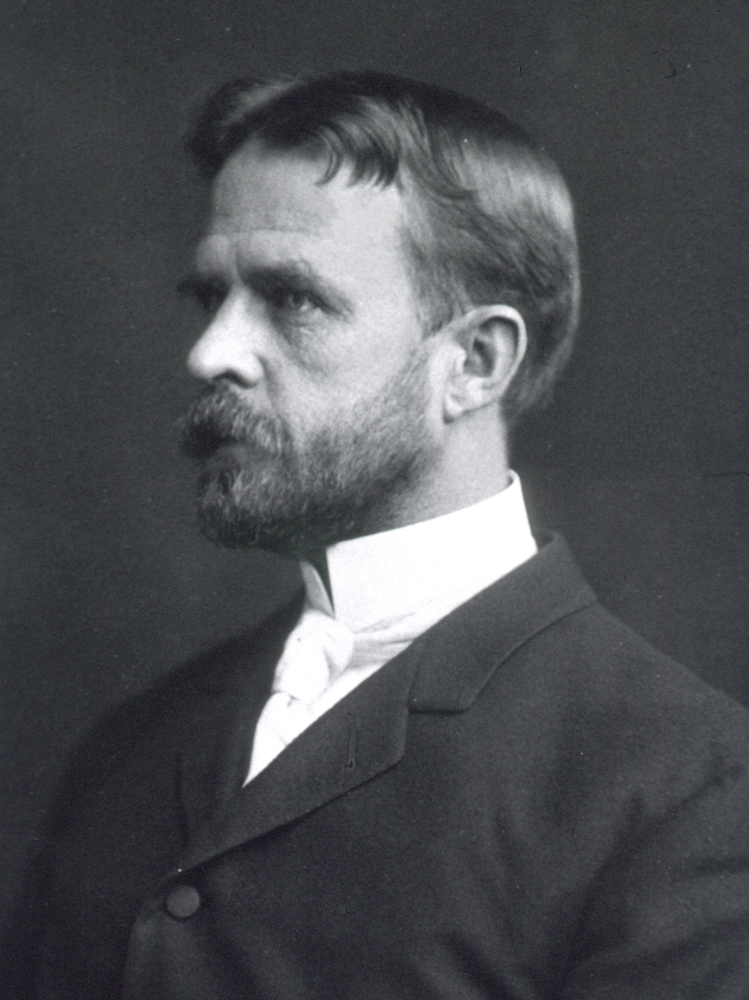
Interactive Lab: Crossing Over & "The Genetic Package Deal" (LD)
How physical distance on a chromosome determines whether genes travel together during meiosis and across evolutionary generations.
When a new mutation appears, it is born on a specific chromosomal background. Over generations, crossovers erode the surrounding ancestral block:
The "Transforming Principle": Proving DNA is the Genetic Molecule
How Frederick Griffith's 1928 bacterial puzzle was solved by Avery's 1944 enzymatic isolation, overthrowing the "Protein Dogma."
- Rough (R) Strain: No sugar coat → Benign (mouse immune system destroys it).
- Smooth (S) Strain: Polysaccharide capsule → Virulent / Lethal (evades immune phagocytosis).
→ An enduring chemical substance (the "Transforming Principle") survived heat and heritably reprogrammed live R cells into lethal S cells!
- Destroy lipids, sugars, or proteins (with Trypsin / Chymotrypsin) → Transformation still occurs!
- Destroy RNA (with RNase) → Transformation still occurs!
- Destroy DNA (with DNase) → TRANSFORMATION PERMANENTLY ABOLISHED!
Watson, Crick, Franklin, & The Secrets of Photo 51 (1953)
How Rosalind Franklin's 62-hour X-ray diffraction photograph provided the exact mathematical parameters of the double helix.
- A-DNA (75% humidity): Dehydrated, crystalline, compressed form.
- B-DNA (92% humidity): Fully hydrated, physiological form found inside living cells. Photo 51 (May 1952) was a 62-hour exposure of pure B-DNA.
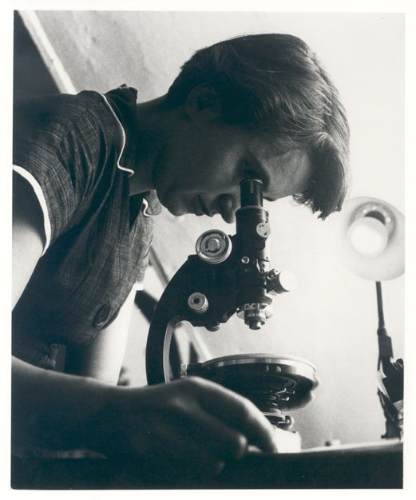
Cavendish Lab & King's College London
Nobel Prize 1962 (Physiology or Medicine)
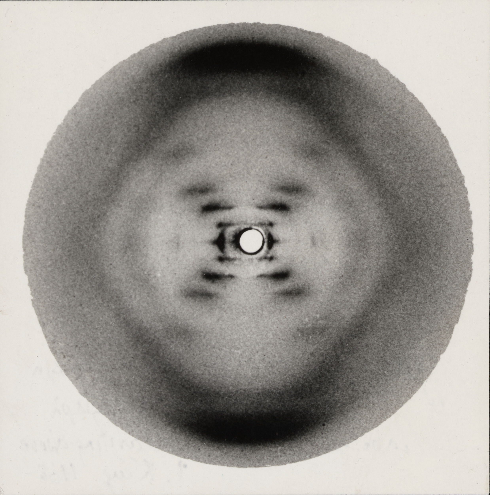
Pauling placed phosphates in the core — but negative charges \(\text{PO}_4^{3-}\) violently repel! Franklin's water data forced the sugar-phosphate backbone to the exterior, placing hydrophobic base pairs on the interior to form \(A=T\) and \(G \equiv C\) hydrogen bonds.
The Evolving Gene: From "One-Gene-One-Enzyme" to Split Genes & Isoforms
How the 20th-century central dogma was repeatedly shattered by biochemical genetics, RNA splicing, and overlapping transcriptomes.
• Prototroph (Wild-type): Can synthesize all vital amino acids & vitamins from minimal medium (salts + sugar).
• Auxotroph (Mutant): Has lost the ability to synthesize a specific essential nutrient due to a single-gene mutation in a metabolic pathway (e.g., an arginine auxotroph dies unless arginine is supplied).
A union of genomic sequences encoding a coherent set of potentially overlapping functional products (proteins or non-coding RNAs) controlled by modular, distal regulatory elements.
The Great Gene Count Collapse: How Were Estimates Derived?
In 2000, world-leading geneticists launched "GeneSweep" to bet on the human gene count. Almost everyone was spectacularly wrong.
| Prominent Bettor / Group | Gene Count Bet |
|---|---|
| Walter Gilbert (Nobel Laureate) | ~100,000 |
| Incyte Genomics (EST Clustering) | ~140,000 |
| Ewan Birney (Ensembl Lead) | ~60,000 |
| Lee Rowen (Winning Lowest Bet) | 25,947 (Won $287) |
| Actual T2T Count (2022–2026) | ~19,900 |
- EST Clustering Artifacts: Expressed Sequence Tags (ESTs) from alternative splice isoforms and pervasive non-coding transcripts were counted as separate genes.
- CpG Island Extrapolation: Estimating ~30,000 CpG islands led scientists to assume every island marked a unique protein-coding promoter.
- Human Exceptionalism Bias: If C. elegans has ~20,000 genes, surely a human must require 5× to 10× more complexity!
First Principles: Why Measure & Sequence Biomolecules?
Why we transition from abstract Mendelian inheritance to physical 1D strings of atoms.
Living organisms execute discrete digital strings. Biological specificity is governed by exact 1D order:
- A single-base change in 3 billion (\(A \to T\)) converts normal hemoglobin to Sickle Cell Disease.
- To diagnose disease, you must read the exact sequence of letters.
Genomes are living palimpsests permanently archiving 4 billion years of evolutionary experiments:
- Mutations accumulate at steady average rates (“molecular clocks”).
- Sequence alignments reconstruct evolutionary family trees with mathematical precision.
Modern therapeutics are directly programmed against sequence data:
- mRNA Vaccines: Synthesized digitally within 48 hours of viral genome release.
- CRISPR Gene Editing: Directs molecular scissors to a specific 20 bp address in human DNA.
How to Read Invisible Molecules & What Makes It Hard
Why you cannot simply look through a microscope — and the three physical barriers to reading sequence.
- 1. The Scale & Diffraction Barrier: A single base pair spans 0.34 nm (3.4 Å). Visible light has a wavelength of 400–700 nm — roughly 1,000× too coarse to image bases directly.
- 2. Chemical Monotony: DNA has a uniform sugar-phosphate backbone with a constant \(-1\) charge per nucleotide. Bases cannot be separated simply by overall charge.
- 3. Signal-to-Noise: A single molecule emits an imperceptible physical signal (a few photons or picoamps), easily drowned out by thermal noise.
Every sequencing technology is a biophysical transducer that converts microscopic chemical identity into a macroscopic physical signal:
1950s: Why Proteins Were Sequenced Decades Before DNA
Why the journey began with proteins, and how Frederick Sanger proved proteins possess unique 1D linear sequences.
- Massive Physical Abundance: Abattoir blood provided grams of pure insulin and hemoglobin — versus micrograms of unpurified DNA.
- Rich Chemical Heterogeneity: 20 diverse amino acids (acidic, basic, aromatic, aliphatic) easily separated on 2D paper chromatography.
- Prevailing Dogma: Until 1952, most biochemists believed proteins carried the genetic code, viewing DNA as a monotonous structural scaffold.
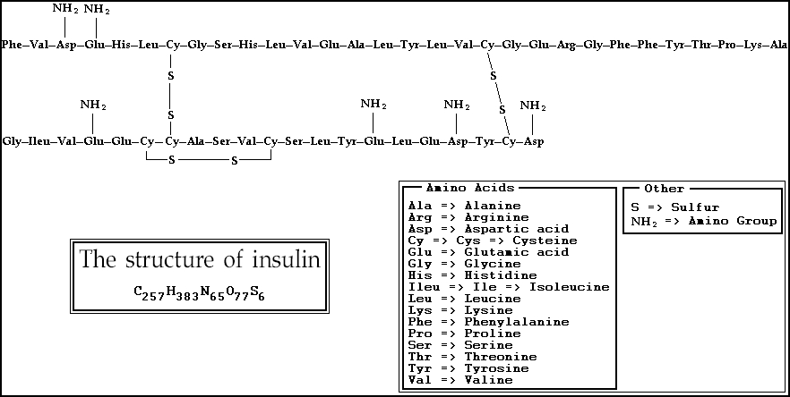
- The Breakthrough: Proved proteins have an invariant, precise 1D sequence of amino acids, demolishing the “amorphous colloid” theory.
- Pehr Edman (1950): Phenylisothiocyanate (PITC) sequentially cleaved 1 amino acid at a time without destroying the remaining chain.
1960s: Deep Evolutionary Truth from Minimal Data
How analyzing a handful of short sequences birthed molecular clocks, bioinformatics, and the first nucleic acid sequence.
Emile Zuckerkandl & Linus Pauling: Compared hemoglobin amino acid differences across horses, gorillas, and humans.
- Mutational divergence accumulated at a roughly constant linear rate.
- Allowed scientists to date evolutionary species splits directly from sequence data!
- Created the single-letter amino acid code (A, C, D...).
- Derived PAM substitution matrices, founding computational biology.
- Used pancreatic and T1 RNases to digest fragments.
- Deduced the iconic cloverleaf secondary structure.
The Polymerase Chain Reaction: The Molecular Photocopier
What PCR actually does: finding one specific sequence in a 3-billion-base genome and printing a billion identical copies in a test tube.
- What is a Primer? Short synthetic single-stranded DNA (18–25 nt) complementary to the exact flanking borders of the target gene.
- Why Needed? DNA Polymerase cannot start de novo — it strictly requires a free 3'-OH group to add incoming nucleotides.
- Opposing Dual Pair: A Forward Primer (bottom strand) and Reverse Primer (top strand) point inward toward each other.
PCR Then & Now: From Manual Water Baths to Push-Button Robots
How Kary Mullis's 1983 midnight epiphany and a Yellowstone microbe liberated molecular biology from tedious manual labor.
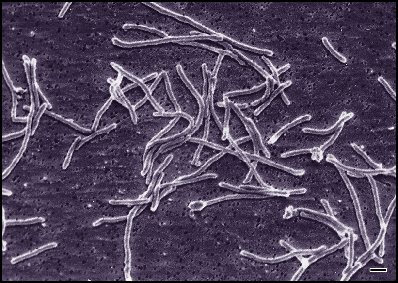
- The 3-Water-Bath Nightmare: Researchers literally stood for 4 hours with stopwatches, transferring test tubes by hand between 95°C → 55°C → 72°C water baths.
- The Dead Enzyme Bottleneck: Early PCR used E. coli DNA Pol I (Klenow). The 95°C heat destroyed the enzyme every cycle — requiring researchers to pipet fresh enzyme 30 times per experiment!
- The Yellowstone Miracle: Cetus isolated heat-stable Taq Polymerase from Thermus aquaticus living in 75°C hot springs — surviving boiling temperatures unharmed!
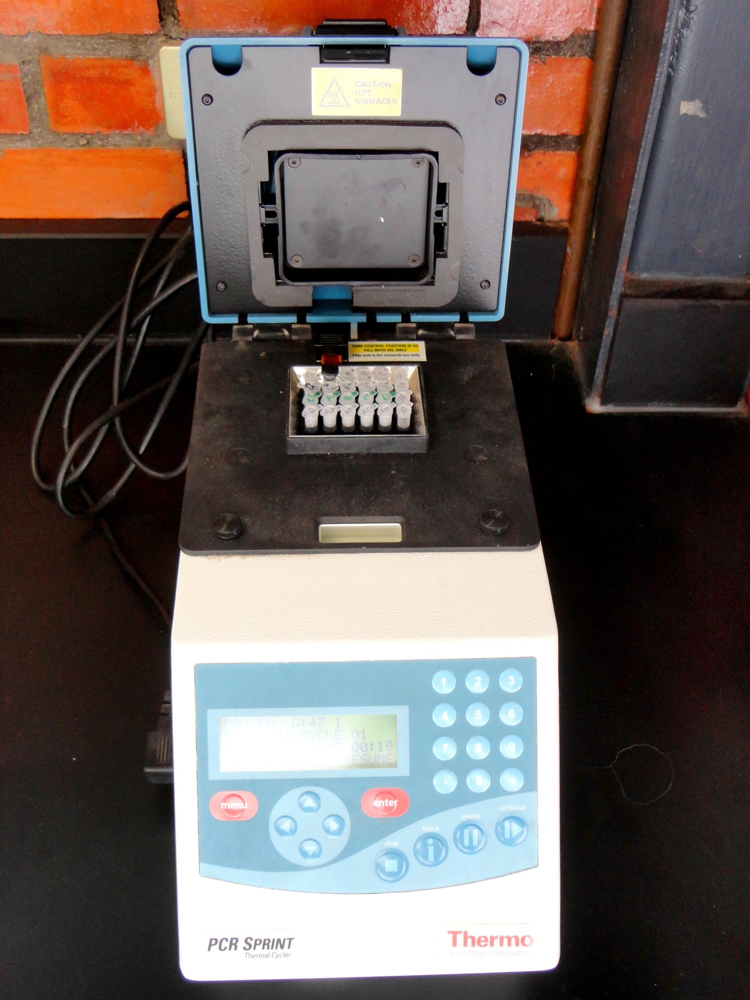
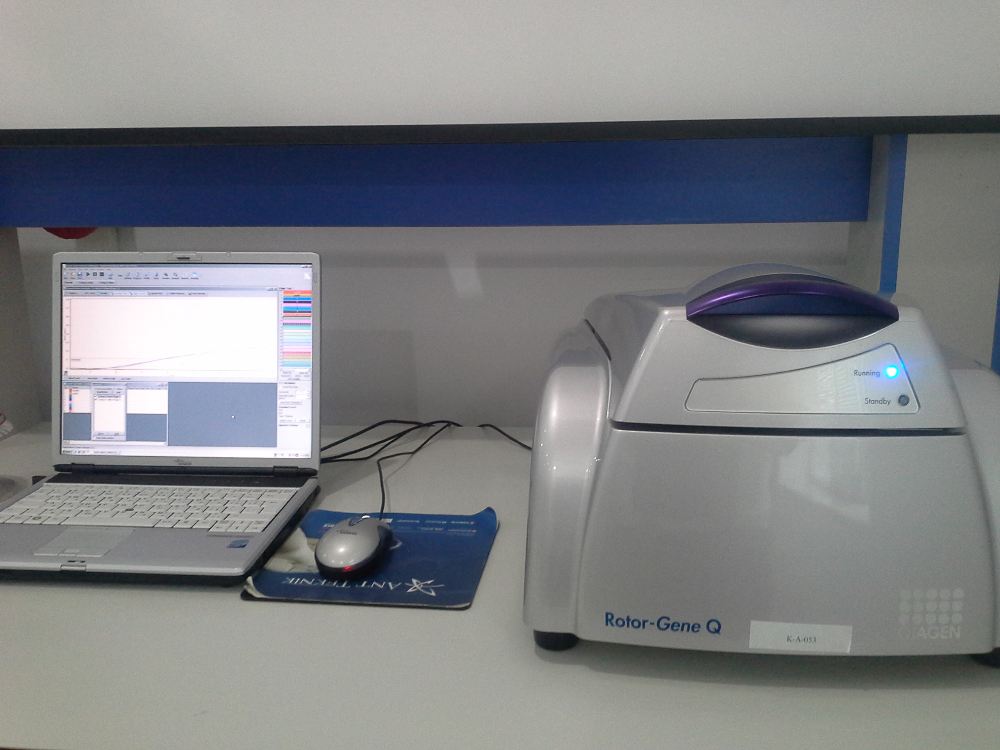
- Automated Peltier Cyclers: Solid-state semiconductor elements ramp temperatures at 5°C/sec, running 35 cycles in under 30 minutes unattended.
- Quantitative Real-Time PCR (qPCR): Fluorescent dyes (SYBR Green / TaqMan probes) measure DNA copy numbers during amplification (gold standard for viral diagnostics).
- Digital Droplet PCR (ddPCR): Partitions sample into 20,000 microscopic oil droplets, counting single DNA molecules directly with absolute Poisson quantification!
First-Gen: Sanger ddNTP Chain Termination & Capillaries
How chemically sabotaging DNA polymerase with 2',3'-dideoxynucleotides enabled the reading of exact nucleotide sequences.
Normal DNA extension requires a free 3'-OH (hydroxyl group) on the sugar ring to attack the next incoming nucleotide. Sanger introduced synthetic 2',3'-dideoxynucleotides (ddNTPs) which have a hydrogen (-H) instead of -OH:
Mix template + primer + polymerase + 100× normal dNTPs + 1× fluorescent ddNTPs (ddATP, ddCTP, ddGTP, ddTTP, each with a distinct color). Polymerase extends until it randomly incorporates a ddNTP, creating a nested ladder of every possible fragment size.
Capillary voltage pulls fragments past a laser detector. Smaller fragments arrive first. The 4-color fluorescence emission trace forms the classic chromatogram trace:
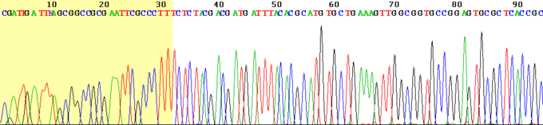
The Public Human Genome Project: Hierarchical BAC Mapping
Why scientists believed brute-force shotgunning was mathematical suicide, and why building an expensive physical scaffold came first.
- The Repeat Crisis: Over 50% of the human genome consists of identical repetitive elements (Alu, LINEs, segmental duplications).
- Why Shotgun Was Feared: In 1990, computers could not distinguish an Alu repeat on Chr 1 from Chr 19. Pure shotgunning risked collapsing repeats into massive scrambled chimeras.
- The Solution: Divide and conquer — break the genome into small, physically localized containers!
- Bacterial Artificial Chromosomes (BACs): Genomic DNA sheared into 150–200 kb chunks → cloned into BAC vectors → restriction-fingerprinted.
- Minimal Tiling Path: BACs were anchored to cytogenetic chromosome bands. Only the minimal overlapping set was chosen for local shotgun sequencing.
- Bermuda Principles (1996): All sequence data released to GenBank within 24 hours — preventing commercial gene patents.
The Celera Disruption: Whole-Genome Shotgun & Assembly
How Craig Venter, Gene Myers, and massive supercomputers proved that algorithmic shotgunning could conquer a mammalian genome.
- Skip the 10-Year Map: Pure brute force — shear the entire 3 Gb genome into random fragments of known sizes (2 kb, 10 kb, 50 kb).
- Paired-End Sequencing: Sequence both ends of every clone. If Read A and Read B are known to be separated by 10 kb, they act as an unbreakable physical bridge across unsequenceable repeat regions!
- Gene Myers' OLC Assembler: Supercomputers compared 27 million reads, building massive overlap graphs to order scaffolds.
- The Patent War & Truce: Celera's intent to patent human genes sparked global outrage. Bill Clinton & Tony Blair brokered a historic joint draft truce in June 2000.
- The Hybrid Verdict: Celera proved WGS worked, but heavily utilized public BAC scaffold data to resolve its repeat collapses!
J. Craig Venter: The Maverick of Modern Genomics
From Vietnam War medic to synthetic life: the high-stakes, controversial career of biology's greatest disruptor.
Before Celera, Venter bypassed the 98% non-coding human genome by inventing Expressed Sequence Tags (ESTs) — sequencing only active mRNA transcripts to discover thousands of human genes in months, accelerating the entire field.
Celera claimed their reference was an anonymous mixture of 5 diverse donors. In reality, over 70% of the sequenced DNA came from Venter himself. In 2007, he published his personal sequence (HuRef) — the first diploid personal human genome.
Circumnavigated the globe on his 95-foot yacht, filtering 200 liters of seawater every 200 miles to shotgun sequence marine microbes — discovering >6 million novel genes and doubling all known protein families.
In 2010, synthesized a 1.08 Mb bacterial genome from chemical bottles and booted up a living synthetic organism (Mycoplasma laboratorium), watermarking Feynman's quote: “What I cannot create, I do not understand.”
The NGS Revolution: Massively Parallel Sequencing
How transitioning from one reaction in a capillary tube to billions of reactions on a single chip transformed molecular biology.
Traditional Sanger sequencing read DNA one template at a time across 96 capillary tubes. Next-Generation Sequencing (NGS) abandoned tubes entirely:
- Surface Miniaturization: Billions of distinct DNA fragments are immobilized across a microscopic glass or silicon chip (flow cell).
- Simultaneous Querying: A single camera or sensor reads the chemical state of all billions of spots simultaneously in one optical snapshot.
- Throughput Explosion: Instead of generating 1 sequence per run, a single machine generates billions of reads in 24 hours.
Single molecules are amplified locally into dense clonal clusters (~1,000 copies) on a glass surface to emit bright, easily detectable fluorescent signals.
Skips PCR amplification entirely; measures single unamplified native DNA molecules as they pass through microscopic electrical pores or optical wells.
The Fundamental Tradeoff: Short Reads vs. Long Reads
The jigsaw puzzle dilemma: why reading a genome requires choosing between pixel-perfect detail and big-picture spans.
The Strengths: Massive data volume (billions of reads), rock-bottom cost ($200/genome), and near-perfect base accuracy (>99.9% accuracy).
Like assembling a jigsaw puzzle with 1,000 identical blue-sky pieces: if a repetitive transposon is 5,000 bp long, a 150 bp read cannot span it, leaving the assembly fragmented.
The Strengths: Continuous native strands span across entire repeat islands, structural rearrangements, and centromeres without assembly guesswork.
Like having large panoramic photo strips that instantly connect entire scenes. High raw error rates have now been conquered by consensus algorithms (PacBio HiFi).
The Economic Miracle: The Plummeting Cost of DNA
How sequencing costs fell 10,000× faster than computer microchips — turning a $3 billion moonshot into a $200 test.
- 2000 (Human Genome Project): $3,000,000,000 (13 years, global consortium).
- 2007 (Craig Venter HuRef): $100,000,000 (1 year, individual personal genome).
- 2014 (HiSeq X Ten Barrier): $1,000 (The iconic $1k genome milestone).
- Today (2026): < $200 (In under 24 hours on a benchtop machine).
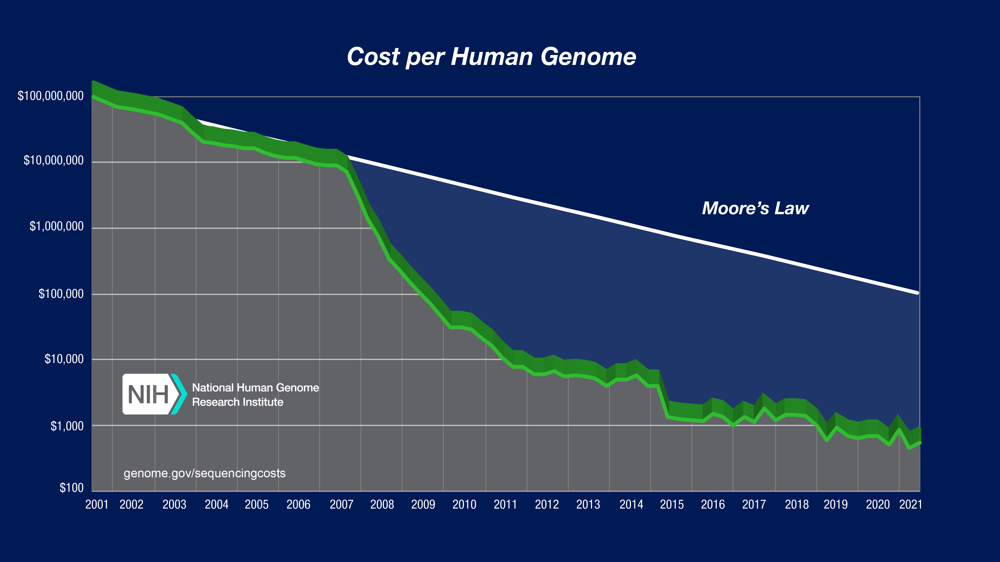
Most Human Sequencing is RE-Sequencing
Why we don't assemble genomes from scratch anymore: placing short reads onto a reference map to correct errors and find mutations.
- De Novo Assembly: Like solving a 3-billion-piece puzzle with no picture on the box (what the HGP did from 1990 to 2003).
- Re-Sequencing: Now we have the completed reference map. We simply take 150 bp short reads and place (align) them at their exact coordinate address.
Because ~30 independent reads overlap the exact same position, sequencing errors correct themselves:
What IS the Reference Genome?
It is not a “perfect” human — it is a universal coordinate street map, evolving from a gapped mosaic (GRCh38) to a gapless standard (T2T-CHM13).
- A standardized linear sequence establishing an official numerical address system for every base in the human genome.
- Clinical Reporting: All patient mutations are recorded as coordinate offsets relative to this standard (e.g.,
chr7:117,559,590 A→Tfor Cystic Fibrosis).
Over 70% of GRCh38 came from a single anonymous donor from Buffalo, NY (the RP11 BAC library), spliced with several other volunteer donors.
NNNNN).
- In 2022, the Telomere-to-Telomere (T2T) Consortium used long-read sequencing to generate the first truly complete, gapless 3.055 Gb human genome.
- Added 200 million novel base pairs, closing every single physical gap across all 24 human chromosomes (1–22, X, Y).
Reading Focus: Why Was ~8% Missing for 20 Years?
The 2003 Human Genome Project declared completion, but left 200 million base pairs untouched — here is why.
- Short Reads Collapse in Repeats: 150 bp short reads cannot span multi-kilobase identical repeats (like solving a puzzle made of identical blue sky pieces).
- Heterochromatin Density: Centromeres and telomeres consist of millions of tandemly repeated satellite “words” that broke assembly algorithms.
- The Diploid Trap: Normal human cells inherit 2 copies of each chromosome. Small differences between maternal and paternal homologs create tangled, branching loops in assembly graphs.
NNNNN) in GRCh38
The T2T Consortium bypassed diploid complexity using an extraordinary biological model:
Dual Sequencing Power: High-accuracy PacBio HiFi reads (>99.9% accuracy, ~20 kb) + ultra-long Oxford Nanopore reads (>100 kb) bridged across repeat arrays.
Reading Focus: Closing Gaps & Revealing Hidden Repeats
Comparing the gapped GRCh38 reference against T2T-CHM13 and cataloging what was hidden inside the heterochromatin.
- GRCh38 Reference: Contained hundreds of unsequenced gaps across euchromatin and left every single centromere unresolved.
- The 5 Acrocentric Stalks: Chromosomes 13, 14, 15, 21, and 22 had their short (p) arms represented merely as empty placeholder scaffolds.
- T2T-CHM13 Milestone: Completed all 24 human chromosomes from telomere to telomere with zero gaps across all 3,054,815,472 base pairs.
Reading Focus: How Gaps Caused False-Positive Variant Calls
Why an incomplete reference genome actively corrupted clinical diagnostics by creating phantom disease mutations.
How missing reference sequence fools standard clinical sequencing software:
- Patient Has Repeat Copies: A healthy patient carries DNA fragments from a segmental duplication or repeat region.
- Reference Has a Gap: Because GRCh38 is missing that specific repeat copy, the alignment algorithm cannot place the read at its true home.
- Forced Homologous Placement: The algorithm forces the read onto the “closest matching” related gene or pseudogene elsewhere in the genome.
- Phantom Mutation Flagged: Natural sequence differences between the two paralogs look like hundreds of heterozygous “disease mutations”!
- True Genomic Decoys Available: With T2T-CHM13, every repeat, paralog, and segmental duplication has its exact coordinate address on the reference map.
- Reads Go Home: Short reads from duplicate loci now map to their proper physical locations instead of cross-contaminating medical genes.
- Purging Clinical Databases: Re-aligning 1000 Genomes and clinical cohorts against T2T eliminated tens of thousands of false-positive variant calls across medically actionable gene panels.
Disease Dossier: Sickle Cell Disease
HBB Glu6Val: An ancient point mutation carried by 20 million people, balancing fatal childhood anemia against malaria survival.
- Early Regional Accounts: Long documented across West Africa as a distinct familial condition with severe episodic bone pain (Ga: Chwechweechwe; Twi: Ahututuo; Fante: Nwiiwii).
- 19th-Century Literature: Dr. Africanus Horton (Sierra Leone, 1874) published clinical observations of recurrent tropical joint crises and splenomegaly.
- 1910 (Microscopic Description): Dr. James Herrick & Ernest Irons first identified “sickle-shaped” erythrocytes in Walter Clement Noel (a dental student from Grenada).
- 1949 (Linus Pauling): Electrophoresis proves physical protein difference → coins “molecular disease.”
- 1957 (Vernon Ingram): Identifies exact amino acid change (Glu6Val).
- 1978 (Kan & Dozy): First DNA prenatal test via RFLP linkage.
- 2023 (Casgevy): First FDA-approved CRISPR gene therapy.
The Textbook Poster Child: Sickle Cell Disease
How a single nucleotide substitution became the foundation of modern molecular genetics and textbook Mendelian inheritance.
Vernon Ingram (1957): Proved that replacing a single hydrophilic glutamate with hydrophobic valine alters the entire protein surface:
The classic Mendelian framework assumes deterministic genotype-to-phenotype translation:
The proportion of individuals with a given genotype who actually manifest the clinical phenotype:
The Biophysical Cascade: What Actually Breaks?
How a single sticky amino acid turns a flexible, dissolved oxygen-carrier into stiff, vessel-clogging solid rods.
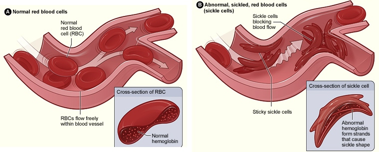
Healthy red blood cells are squishy, liquid-filled discs. In sickle cell, releasing oxygen makes hemoglobin stick together into solid fibers (inset), deforming cells into rigid sickles that jam narrow vessels.
- In the Lungs (Oxygen On): Hemoglobin binds O2 and remains fully dissolved like sugar in water. The RBC is a soft, flexible biconcave disc (7.5µm).
- In the Tissues (Oxygen Off): Hemoglobin unloads O2 to feed tissues. Even without oxygen, normal hemoglobin stays dissolved in liquid — allowing RBCs to easily squish through tiny 5µm capillaries.
- The "Velcro" Patch: When sickle hemoglobin drops off its O2, the molecule shifts shape and exposes the sticky Valine patch on its outer surface.
- Solid Polymer Fibers: The sticky patches latch onto neighboring molecules, growing into stiff crystalline rods that stretch the cell into a rigid sickle.
- Vessel Logjam (VOC): Stiff sickles cannot bend → they wedge in capillaries, cutting off blood flow and causing severe ischemic pain.
The Evolutionary Engine: Balanced Polymorphism
Why did a lethal genetic mutation reach allele frequencies of 15–20% in human populations?
- The Textbook Rule: When a mutation causes fatal childhood disease, natural selection relentlessly weeds it out. It should be vanishingly rare (<0.1% in the population).
- The Surprising Reality: Across Sub-Saharan Africa, the Mediterranean, the Middle East, and India, the sickle gene is found in up to 1 in 5 people (10% to 20%)!
- The Core Question: Why would natural selection actively maintain an allele with such a high lethal cost?
In 1954, Anthony Allison discovered that HbA / HbS carrier traits have >90% protection against lethal cerebral malaria (Plasmodium falciparum):
Balanced Equilibrium: The lethal cost of homozygous disease (HbS/HbS) is balanced by the massive survival advantage of carriers (HbA/HbS).
Clinical Heterogeneity: The Genotype ≠ Phenotype Paradox
Why do two individuals with identical homozygous mutations (HbS/HbS) experience radically different lifespans?
- Early Onset: Dactylitis (hand-foot syndrome) at 5 months of age.
- Frequent Hospitalizations: 6–10 severe vaso-occlusive pain crises per year requiring intravenous opioids.
- End-Organ Damage: Splenic infarction by age 3; ischemic stroke at age 7; proliferative retinopathy.
- Life Expectancy: Significantly reduced (<45 years without intensive transfusions).
- Incidental Diagnosis: Discovered during routine college athletic screening at age 19.
- Crisis History: Zero hospitalizations; occasional mild joint aches during severe dehydration.
- Organ Function: Fully preserved splenic function, normal cerebral blood flow velocities.
- Life Expectancy: Near-normal lifespan (>70 years).
Genetic Modifiers: The Shield of Fetal Hemoglobin
How developmental gene regulation naturally protects newborns and why some adults never turn off the shield.
- In Utero: Fetuses produce Fetal Hemoglobin (HbF, α2γ2), which lacks β-chains entirely and has high oxygen affinity.
- The Postnatal Switch: At birth, transcription factors silence the γ-globin gene and activate adult β-globin (HBB).
- The Silent Window: Newborns with sickle cell are completely asymptomatic because their red blood cells are packed with protective HbF!
In some individuals, genetic variants keep the γ-globin switch turned ON throughout adulthood:
Patients with >20% persistent adult HbF are virtually asymptomatic despite being homozygous HbS/HbS.
Epistasis: The Multi-Chromosomal Regulatory Network
Genome-wide association studies revealed that HbF levels are controlled by genes scattered across chromosomes 2, 6, and 19.
- Massive Effect Size: GWAS revealed that non-coding SNPs in intron 2 of BCL11A (Chromosome 2) explain ~50% of all adult HbF variation — an enormous single-gene effect!
- The Master Repressor: BCL11A protein binds directly to γ-globin promoters on Chr 11, physically silencing fetal hemoglobin expression after infancy.
Epistasis Defined: The clinical severity of the HBB mutation on Chr 11 is fundamentally masked or amplified by genetic variation at chromosomes 2, 6, and 19.
Gene-Gene Interactions: The α-Thalassemia Paradox
How co-inheriting a second genetic blood disorder actually protects sickle cell patients from fatal strokes.
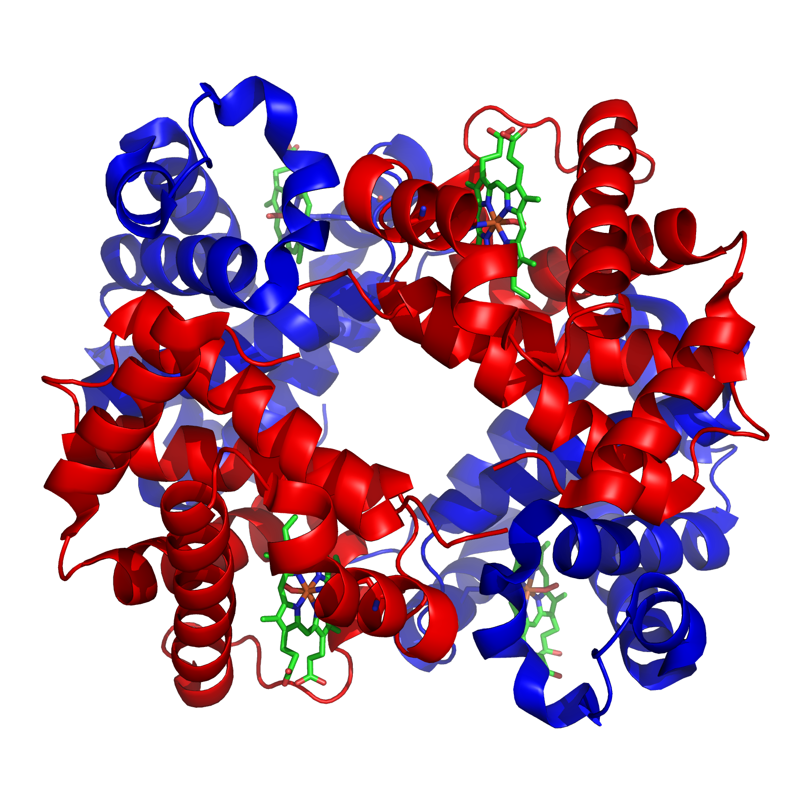
• 2 α-chains (Red): Encoded by HBA1/HBA2 on Chr 16
• 2 β-chains (Blue): Encoded by HBB on Chr 11
• 4 Heme Groups (Green): Oxygen-binding pockets
- 4 Genomic α-Copies: Normal humans carry 4 α-genes (2 on each chromosome 16: αα / αα) to match 2 β-genes on Chr 11.
- α-Thalassemia Deletions: Inheriting 1 or 2 deleted α-genes (-α / αα or -α / -α) reduces total cellular hemoglobin concentration.
HbS polymerization requires first forming a "critical nucleus" of ~15–30 tetramers simultaneously. By the law of mass action, nucleation rate scales as Rate ∝ [HbS]30, meaning delay time scales inversely:
- The 10% Rescue: Dropping hemoglobin concentration by just 10% prolongs delay time by (0.90)−30 ≈ 24×!
- The Escape Window: Co-inheriting α-thalassemia slightly dilutes cellular Hb → delay time exceeds capillary transit (~1s) so RBCs escape before sickling!
Gene × Environment: What Triggers a Sickle Crisis?
How non-genetic physical parameters and vascular inflammation push a static genome across the non-linear sickling threshold.
- Vascular Adhesion: Sickle crisis is not just mechanical clogging — systemic infections activate endothelial cells to express P-selectin and VCAM-1, anchoring sickled RBCs and leukocytes.
- Free Heme Toxicity: Intravascular hemolysis floods plasma with cell-free hemoglobin, depleting nitric oxide (NO) → systemic vasoconstriction and endothelial injury.
- Epigenetic State: Stress, cortisol, and chronic systemic inflammation alter chromatin accessibility and cellular adhesion markers.
Translational Breakthrough: Engineering Stem Cells with CRISPR
Why mature red blood cells cannot be edited and how targeting self-renewing CD34+ progenitors creates a permanent cure.
- Why Not Treat Mature RBCs? Red blood cells live only 10–20 days in sickle patients and have no nucleus or DNA — mature blood cannot be edited!
- Hematopoietic Stem Cells (HSPCs): We mobilize and extract self-renewing CD34+ stem cells from the patient's bone marrow / peripheral blood.
- Lifelong Transmission: Because edited stem cells divide and renew for decades, every future red blood cell produced for the rest of the patient's life inherits the therapeutic edit.
The $2.2 Million Cure: Efficacy & The Global Access Paradox
Unprecedented clinical success collides with extreme economic barriers and severe global health inequities.
- >95% VOC Elimination: Over 95% of treated patients achieved complete freedom from severe vaso-occlusive pain crises for ≥12 consecutive months.
- Transfusion Independence: Severe transfusion-dependent patients achieved sustained normal hemoglobin with HbF stabilizing at >40% of total globin.
- First in History: The world's first approved CRISPR therapeutic to achieve functional clinical cure of a severe hereditary disease.
In-Class Sprint: The Precision Data Hunt & Genome Cartography
Turn to your neighbors. Open your section's database on your laptop or phone, discover the real numbers, and submit on Canvas.
Click to open these live NIH/NCBI tools on your device:
BCL11A → zoom into Intron 2 (+58 kb from TSS)• ENCODE Track: Look for the single GATA1 erythroid ChIP-seq peak
• ClinVar Search: Type
BCL11A HPFH → see natural fetal hemoglobin reactivation variants
- 1. Exact Locus: What chromosome, intron & distance from TSS is targeted?
- 2. Molecular Mechanism: What transcription factor binding site is disrupted?
- 3. Clinical Impact: Why edit this enhancer instead of the coding sequence?
Chr 2p16.1 (BCL11A Intron 2, +58 kb Enhancer)Target Motif: GATA1 erythroid transcription factor core binding motif.
Clinical Result: Single CRISPR-Cas9 cut silences repressor only in red cells → permanently awakens protective HbF > 40% without neuro/lymphoid toxicity!
Lecture Synthesis: The Spectrum of Genetic Architecture
Why "Mendelian vs. Complex" is a false dichotomy — every human disease sits along a continuous multi-layered spectrum.
A single high-effect locus sets the physical vulnerability (e.g., HBB p.Glu6Val creates the polymer-prone protein).
Distant loci across the genome (BCL11A, HBS1L-MYB, HBA1/2) dynamically tune the clinical expressivity from lethal to silent.
Hydration, temperature, infection, and endothelial state dictate whether the biophysical threshold is crossed into crisis.